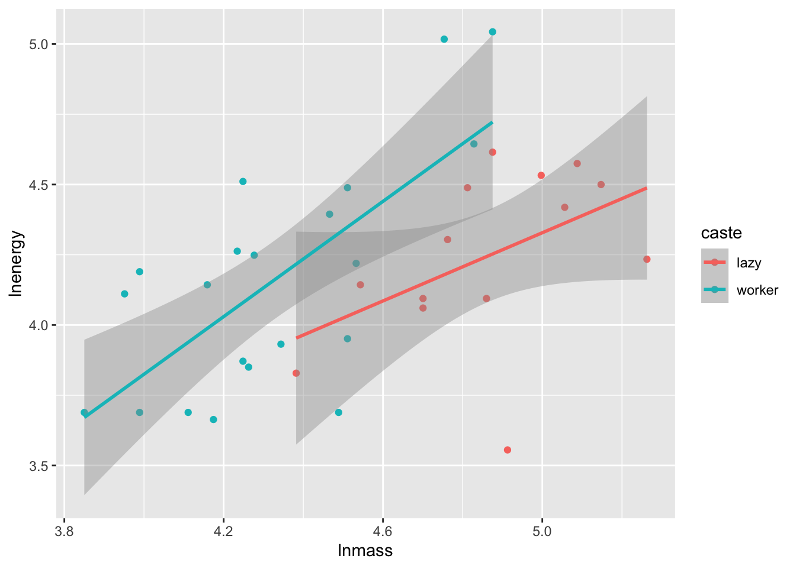
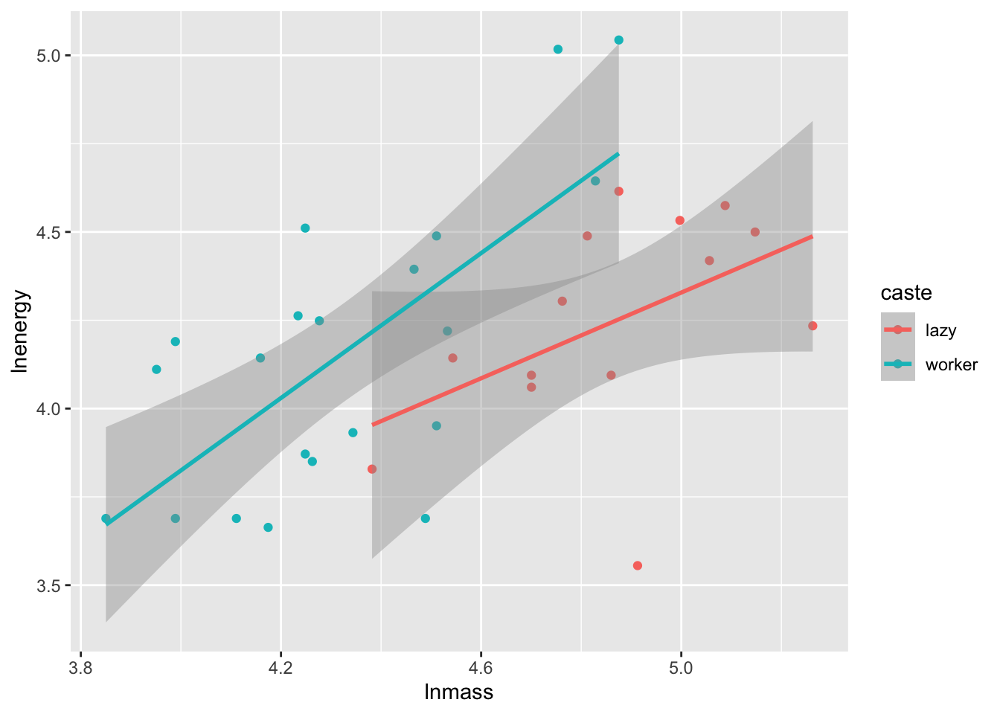
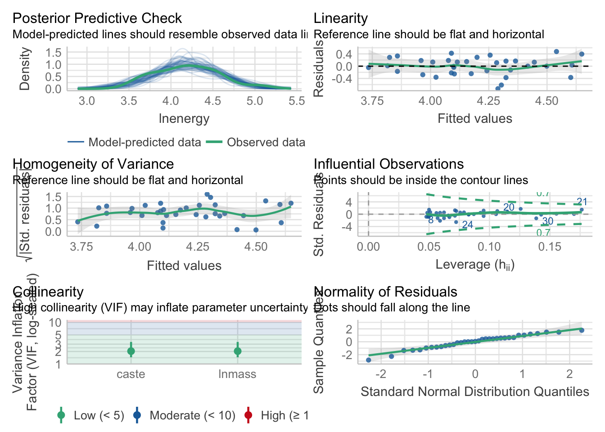
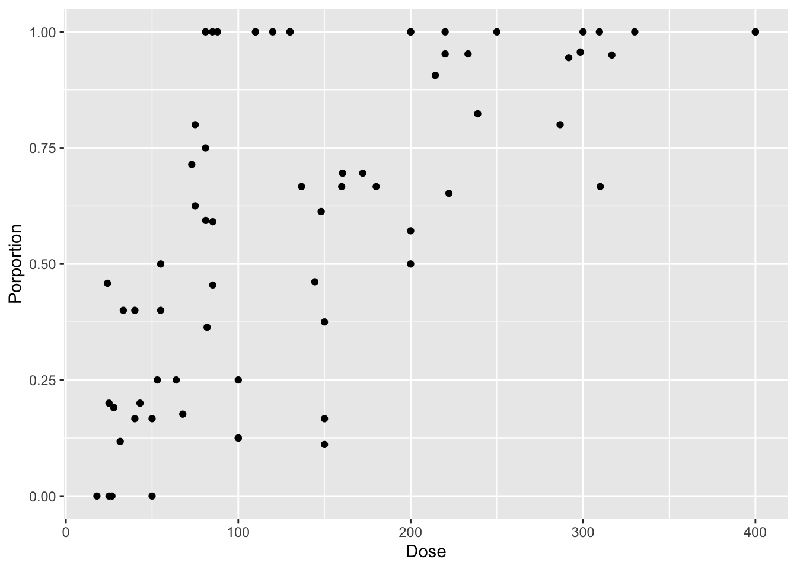
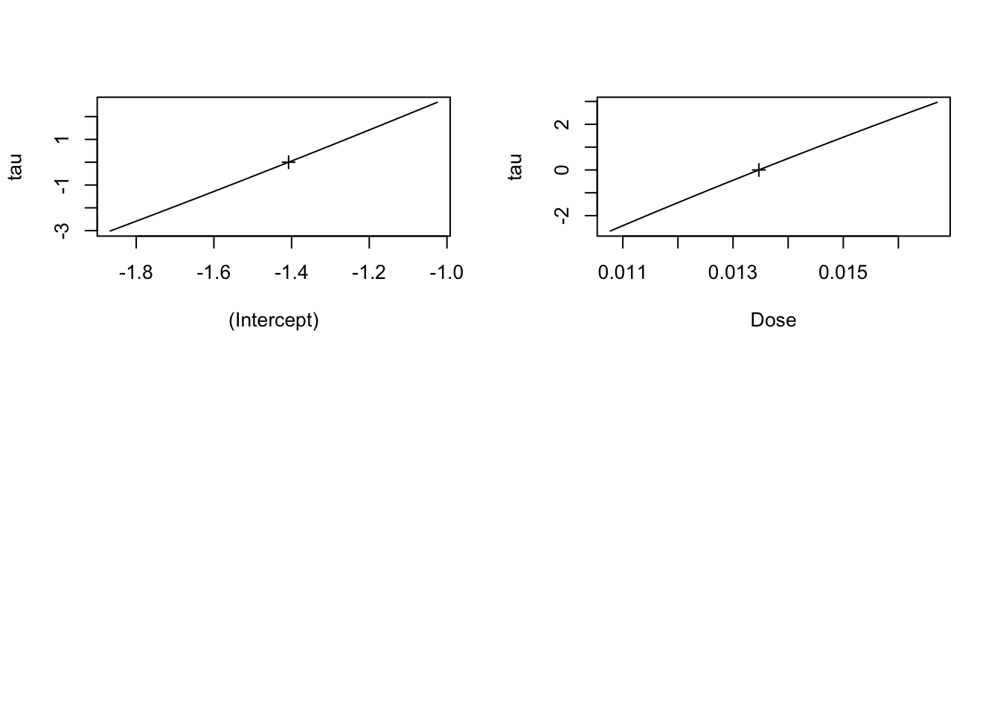

library(readr)
library(ggplot2)
molerats <- read_csv("./data/18e4MoleRatLayabouts.csv")
ggplot(molerats,
aes(x = lnmass, y = lnenergy, color = caste)) +
geom_point() +
stat_smooth(method = "lm")
To highlight all of the possibilities of p-values, let’s look at our old data set looking at worker caste of naked mole rats and energy expenditure.
library(readr)
library(ggplot2)
molerats <- read_csv("./data/18e4MoleRatLayabouts.csv")
ggplot(molerats,
aes(x = lnmass, y = lnenergy, color = caste)) +
geom_point() +
stat_smooth(method = "lm")
Let’s fit a model and check assumptions as usual…
library(performance)
mole_mod <- lm(lnenergy ~ caste + lnmass, data= molerats)
check_model(mole_mod)
You are welcome to check the additivity assumption, but, I’ll tell you - it’s additive.
So, first, we might want to look at raw coefficients. What is the slope of the relationship between mass and energy expenditure? What is the effect of caste (worker relative to lazy)?
We can see this with t-tests in the summary table
summary(mole_mod)
Call:
lm(formula = lnenergy ~ caste + lnmass, data = molerats)
Residuals:
Min 1Q Median 3Q Max
-0.73388 -0.19371 0.01317 0.17578 0.47673
Coefficients:
Estimate Std. Error t value Pr(>|t|)
(Intercept) -0.09687 0.94230 -0.103 0.9188
casteworker 0.39334 0.14611 2.692 0.0112 *
lnmass 0.89282 0.19303 4.625 5.89e-05 ***
---
Signif. codes: 0 '***' 0.001 '**' 0.01 '*' 0.05 '.' 0.1 ' ' 1
Residual standard error: 0.2966 on 32 degrees of freedom
Multiple R-squared: 0.409, Adjusted R-squared: 0.3721
F-statistic: 11.07 on 2 and 32 DF, p-value: 0.0002213Or we can make it neater with broom.
library(broom)
tidy(mole_mod)# A tibble: 3 × 5
term estimate std.error statistic p.value
<chr> <dbl> <dbl> <dbl> <dbl>
1 (Intercept) -0.0969 0.942 -0.103 0.919
2 casteworker 0.393 0.146 2.69 0.0112
3 lnmass 0.893 0.193 4.63 0.0000589In either case, we’d reject the null hypothesis that there was no mass-energy relationship, and likely see that worker’s are different from lazy mole rats.
To be clearer, do these predictors explain variation in our model? For this, we want F tests, with the null hypothesis that the predictors do not matter.
Now, R has a builtin anova() function - but, it uses Type I sums of squares. These are sequential. So, consider the following for caste.
anova(mole_mod)Analysis of Variance Table
Response: lnenergy
Df Sum Sq Mean Sq F value Pr(>F)
caste 1 0.06656 0.06656 0.7568 0.3908
lnmass 1 1.88152 1.88152 21.3923 5.887e-05 ***
Residuals 32 2.81450 0.08795
---
Signif. codes: 0 '***' 0.001 '**' 0.01 '*' 0.05 '.' 0.1 ' ' 1no_caste <- lm(lnenergy ~ lnmass, data = molerats)
anova(mole_mod, no_caste)Analysis of Variance Table
Model 1: lnenergy ~ caste + lnmass
Model 2: lnenergy ~ lnmass
Res.Df RSS Df Sum of Sq F Pr(>F)
1 32 2.8145
2 33 3.4520 -1 -0.63747 7.2478 0.0112 *
---
Signif. codes: 0 '***' 0.001 '**' 0.01 '*' 0.05 '.' 0.1 ' ' 1Uhhhh…. which is it? What’s happening? Here, anova() is going sequentially. So, the actual comparison we see for caste isn’t a model with caste and mass v. one with just mass, but instead….
int_only <- lm(lnenergy ~ 1, data = molerats)
caste_only <- lm(lnenergy ~ caste, data = molerats)
anova(int_only, caste_only)Analysis of Variance Table
Model 1: lnenergy ~ 1
Model 2: lnenergy ~ caste
Res.Df RSS Df Sum of Sq F Pr(>F)
1 34 4.7626
2 33 4.6960 1 0.06656 0.4677 0.4988Ew. Except, the p and F values are also off, because they don’t have the right denominator DF due to the lack of mass being in the model, and there are likely backdoor effects, and…. it’s just problematic.
We want marginal, or type II sums of squares. These are in the car package with car::Anova() (note the capital A)
library(car)
Anova(mole_mod)Anova Table (Type II tests)
Response: lnenergy
Sum Sq Df F value Pr(>F)
caste 0.63747 1 7.2478 0.0112 *
lnmass 1.88152 1 21.3923 5.887e-05 ***
Residuals 2.81450 32
---
Signif. codes: 0 '***' 0.001 '**' 0.01 '*' 0.05 '.' 0.1 ' ' 1Lovely. We now have done the correct model comparison.
Note, if we had interactions, the F tests and p-values for the additive components would stay the same. There is something called a Type III SS which would enter each term as if it was the last one - but that leads to some nonsensical models. I’ll leave it to you to fit a model with an interaction and try Anova() with type = "III" versus the default type = "II"
This is great, but what about then doing post-hoc comparisons of caste controlling for mass? Well, we have emmeans! And now, the corrections affect the p-values. We only have two groups here, so….. we can’t see it, but, instead of having to go to confint() we can just just use contrast() which will perform t-tests
library(emmeans)
mole_em <- emmeans(mole_mod, ~caste)
contrast(mole_em, "pairwise") contrast estimate SE df t.ratio p.value
lazy - worker -0.393 0.146 32 -2.692 0.0112contrast(mole_em, "pairwise", adjust = "none") contrast estimate SE df t.ratio p.value
lazy - worker -0.393 0.146 32 -2.692 0.0112Great! Try this out with the Zooplankton predation experiment. Look at the F-tests. Then evaluate posthoc tests only for those F-tests where we would reject the null.
zooplankton <- read.csv("./data/18e2ZooplanktonDepredation.csv")If you really want to have fun, try it with the algal herbivory experiment with an interaction between tide height and herbivory.
intertidal <- read.csv("./data/18e3IntertidalAlgae.csv")For this, let’s look at the binomial logistic regression between cryptosporidium dose and infection in mice.
library(dplyr)
mouse <- read_csv("./data/cryptoDATA.csv") |>
mutate(Porportion = Y/N)
mouse_plot <- ggplot(mouse,
aes(x = Dose, y = Porportion)) +
geom_point()
mouse_plot
mouse_glm <- glm(Porportion ~ Dose,
weights = N,
data = mouse,
family = binomial)First, how do we look at a likelihood profile to make sure our model is well behaved? There are a number of libraries, but the builtin MASS has a profile function that can then be used to evaluate things visually looking at the square root of the log-likelihood profile.
library(MASS)
mouse_prof <- profile(mouse_glm)
plot(mouse_prof)
Looks good.
If we look at the model, we get Wald Z-Tests which are an approximation of the profile.
summary(mouse_glm)
Call:
glm(formula = Porportion ~ Dose, family = binomial, data = mouse,
weights = N)
Deviance Residuals:
Min 1Q Median 3Q Max
-3.9532 -1.2442 0.2327 1.5531 3.6013
Coefficients:
Estimate Std. Error z value Pr(>|z|)
(Intercept) -1.407769 0.148479 -9.481 <2e-16 ***
Dose 0.013468 0.001046 12.871 <2e-16 ***
---
Signif. codes: 0 '***' 0.001 '**' 0.01 '*' 0.05 '.' 0.1 ' ' 1
(Dispersion parameter for binomial family taken to be 1)
Null deviance: 434.34 on 67 degrees of freedom
Residual deviance: 200.51 on 66 degrees of freedom
AIC: 327.03
Number of Fisher Scoring iterations: 4How good? Well, we can compare the confidence interval from the approximation to that of the actual profile.
confint(mouse_glm) 2.5 % 97.5 %
(Intercept) -1.70349394 -1.1209601
Dose 0.01147184 0.0155778confint(mouse_prof) 2.5 % 97.5 %
(Intercept) -1.70349193 -1.12095463
Dose 0.01147181 0.01557782Not 100% the same, but so close that there’s little to be gained from not using the approximation.
Note, emmeans also uses Wald Z-Tests if you are comparing categorical values.
Here again, we’re comparing models. And we want to do it in with marginal model comparisons - not sequential. So, we can again use car::Anova()
Anova(mouse_glm)Analysis of Deviance Table (Type II tests)
Response: Porportion
LR Chisq Df Pr(>Chisq)
Dose 233.84 1 < 2.2e-16 ***
---
Signif. codes: 0 '***' 0.001 '**' 0.01 '*' 0.05 '.' 0.1 ' ' 1Note - not every object type defaults to anova being type I, so read the documentation for any new package or object type you use.
Grab the Keeley data, and as Richness is either Poisson of negative binomial (try either!), fit a model with firesev, cover, elev, and their interactions. Evaluate for which predictors we can reject the null hypothesis that adding the predictor does not improve the deviance. For your interest, compare type I, II, and III outcomes.
keeley <- read_csv("./data/Keeley_rawdata_select4.csv")